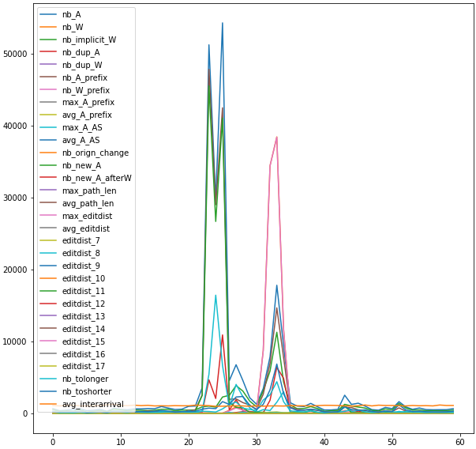
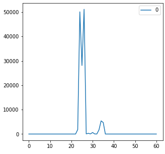

Package BML
BML is a BGP dataset generation tool that extracts the majority of known features in the literature, the internet topology and that allows the user to build specific features from BGP data.
Getting started
In this getting started guide, we will implement the use case presented in the BML's paper:
"BML: An Efficient and Versatile Tool for BGP Dataset Collection".
Installation
$ git clone https://github.com/KevinHoarau/BML.git
$ cd BML
$ pip install . -v
Dataset
Dataset definition and collection:
-
dataset.load()takes as input a pythondictthat describes the collection parameters. -
The field
PeriodsOfIntereststakes alistofdictwhere eachdictdescribes a sample in the dataset.
from BML.data import Dataset
from BML import utils
#################
# Data collection
folder = "dataset/"
dataset = Dataset(folder)
dataset.setParams({
"PrimingPeriod": 10*60, # 10 hours of priming data
"IpVersion": [4], # only IPv4 routes
"Collectors": ["rrc06"], # rrc06: at Otemachi, Japan
})
dataset.setPeriodsOfInterests([
{
"name": "GoogleLeak",
"label": "anomaly",
"start_time": utils.getTimestamp(2017, 8, 25, 3, 0, 0), # August 25, 2017, 3:00 UTC
"end_time": utils.getTimestamp(2017, 8, 25, 4, 0, 0) # August 25, 2017, 4:00 UTC
}
])
# run the data collection
utils.runJobs(dataset.getJobs(), folder+"collect_jobs")
When BML is collecting data for a sample, the progression is reported in a log file in the sample's folder. Then, we can monitor the progression using a bash command as:
$ watch cat dataset/anomaly/GoogleLeak/log_collect_sample.log
If the dataset contains multiples samples, which is usually the case, the processing queue can be monitored using:
$ watch -n 1 cat dataset/collect_jobs/queue.log
Statistical features extraction
When the data has been collected, we can run our first data transformation. Here we will extract BGP statistical features.
from BML.transform import DatasetTransformation
# features extraction every minute
datTran = DatasetTransformation(folder, "BML.transform", "Features")
datTran.setParams({
"global":{
"Period": 1,
}
})
# run the data transformation
utils.runJobs(datTran.getJobs(), folder+"transform_jobs")
Again, the sample's transformation progression can be monitored using:
$ watch cat dataset/anomaly/GoogleLeak/transform/Features/log_transform_sample.log
And the overall transformation progression can be monitored using:
$ watch -n 1 cat dataset/transform_jobs/queue.log
By default, the output of the transformation is saved in a json file in the sample's folder.
The default name for this file is: {tranformation_name}_{period}.json.
The data can easily be loaded and vizualized in python:
import pandas as pd
data = pd.read_json(folder+"anomaly/GoogleLeak/transform/Features/Features_1.json")
data.plot(figsize=(10,10))
Output:

Graph features extraction
Similarly, we can extract BGP graph features.
# graph features extraction every minute
datTran = DatasetTransformation(folder, "BML.transform", "GraphFeatures")
datTran.setParams({
"global":{
"Period": 1,
}
})
# run the data transformation
utils.runJobs(datTran.getJobs(), folder+"transform_jobs")
Custom data transformation
BML offers base tranformation objects than we can inherit to build a custom data tranformation.
For this example, let's say that we want to compute the number of announcements received during an interval where the Google AS (AS 15169) is in the AS-PATH.
We implement the data transformation in a file named GoogleRoutes.py :
from BML.transform import BaseTransform
class GoogleRoutes(BaseTransform):
computeRoutes = False
def transforms(self, index, routes, updates):
n = 0
for update in updates:
if update["type"]=='A':
if "15169" in update["fields"]["as-path"]:
n += 1
return(n)
Then, we can use it as any data tranformation:
# custom data transformation every minute
datTran = DatasetTransformation(folder, "GoogleRoutes", "GoogleRoutes")
datTran.setParams({
"global":{
"Period": 1,
}
})
# run the data transformation
utils.runJobs(datTran.getJobs(), folder+"transform_jobs")
We can also load and vizualise the output as previously:
import pandas as pd
data = pd.read_json(folder+"anomaly/GoogleLeak/transform/GoogleRoutes/GoogleRoutes_1.json")
data.plot(figsize=(5,5))
Output:

Data tranformation
Statistical features
Graph features
Nodes features
BGP graph
Hijack label
Routes features
Custom data transformation
BaseTransform
BaseTransformParallelized
Command Line Interface (CLI)
Run jobs
Updates dump
Routes dump
Expand source code
"""
BML is a BGP dataset generation tool that extracts the majority of known features in the literature,
the internet topology and that allows the user to build specific features from BGP data.
.. include:: ./documentation.md
"""Sub-modules
BML.dataBML.scriptsBML.transformBML.utils